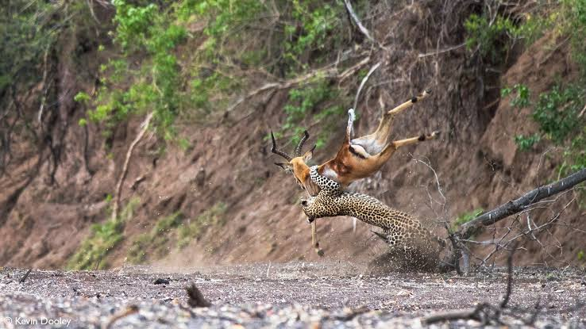

<!DOCTYPE html>
<html lang="en">
<head>
    <meta charset="UTF-8">
    <meta name="viewport" content="width=device-width, initial-scale=1.0">
    <title>Impala Dossier</title>
</head>
<body>
    
</body>
</html>

<header>
<h1>Species Page: Impala</h1>
</header>

<nav>
    <ul>
<li><a href="african-adventure.html">Home</a></li>
    </ul>
</nav>

<main>
    <article>
        <section id="basic-info">
            <h2>Scientific Information</h2>
            <p><strong>Common Name:</strong> Impala </p>
            <p><strong>Status/Conservation:</strong> Least Concern <sup><a href="#ref1">[1]</a></sup></p>
            <section id="classification">
                <h2>Full Scientific Classification</h2>
                <table border="1">
                    <tr><th>Taxonomic Rank</th><th>Classification</th></tr>
                    <tr><td>Kingdom</td><td>Animalia</td></tr>
                    <tr><td>Phylum</td><td>Chordata</td></tr>
                    <tr><td>Subphylum</td><td>Vertebrata</td></tr>
                    <tr><td>Class</td><td>Mammalia</td></tr>
                    <tr><td>Subclass</td><td>Theria</td></tr>
                    <tr><td>Order</td><td>Artiodactyla</td></tr>
                    <tr><td>Suborder</td><td>Ruminantia</td></tr>
                    <tr><td>Family</td><td>Bovidae</td></tr>
                    <tr><td>Genus</td><td>Aepyceros</td></tr>
                    <tr><td>Species</td><td>Aepyceros melampus</td></tr>
                </table>
            </section>
         <section id="physical-profile">
            <h2>Physical-profile</h2>
            <dl>
               <dt>Size range</dt>
               <dd> Shoulder height measures 28–36 inches (70–92 cm), with a head-to-body length of 4.3–5.2 feet (1.3–1.6 m). </dd>

               <dt>Weight</dt>
               <dd> Males weigh 100–170 lbs (45–76 kg). Females are smaller, weighing 88–117 lbs (40–53 kg).</dd>
               <dt>Identification Markings</dt>
               <dd>Identification Markings: Sleek, reddish-brown coat on the back, lighter tan flanks, and a white underbelly. They have a distinctive black "M" shape on their rear, black tufts of hair above their back hooves (covering scent glands), and males possess long, lyre-shaped ridged horns.  
                <sup><a href="#ref2">[2]</a></sup></dd>
           </dl>
           
       </section>
       <section id="habitat-geography">
        <h2>Habitat & Geography</h2>
        <p>Habitats: Open woodlands, savannas, and ecotones (areas where woodlands meet grasslands) close to water sources.
            Distribution: Native to Eastern and Southern Africa, ranging from Kenya and Uganda down to South Africa.</p>
<h3>Distribution Map</h3>

        </section>
<section id="ecology and behavior">
    <h2>Ecology and Behavior</h2>
<h3>Feeding and Diet</h3>
<p>Adaptable herbivores that both graze and browse depending on the season, eating grasses, herbs, shoots, shrubs, and acacia pods.</p>
<ul>
    
</section>
<section id="communication and social behavior">
    <h2>Communication and Social Behavior</h2>
    <p>Impalas are diurnal and highly social. They communicate through loud snorts, barks, scent markings from glands on their hind legs, and visual alarm displays like high-leaping bounds.</p>
    
</ol>
<h3>Life Cycle and Breeding Behaviors</h3>
                <p>Females and young live in herds of 15 to 100 individuals, while bachelor males form separate groups and territorial males defend territories during the rut. Females have a 6.5 to 7 month gestation period and give birth to a single calf.</p>
                
            
            
                <section id="Predators">
    <h2>Predators</h2>
    <p>Natural predators of the impala include lions, leopards, cheetahs, African wild dogs, spotted hyenas, and Nile crocodiles. They rely on speed and leaps of up to 10 feet high and 30 feet long to evade danger.</p>

    </main>
    <footer>

    </footer>
</body>
</html>